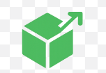

¡Bienvenido al curso de Programación Orientada a Objetos con Java!
Nos alegra mucho que formes parte de este curso. Esperamos que disfrutes aprendiendo Java de una forma práctica, didáctica y divertida. A lo largo de las unidades conocerás los fundamentos de la programación, el diseño orientado a objetos y la implementación de soluciones completas.
Prepárate para desarrollar tus primeros programas y descubrir el potencial de pensar como un programador.
Progreso
Aquí podrás observar lo aprendido en este curso
Unidad 1
Los alumnos deben poder:
- Crear una clase básica con atributos y métodos.
- Entender la diferencia entre público y privado.
- Usar if y for dentro de métodos.
- Relacionar cada clase con ejemplos del mundo real.

Unidad 2
Los alumnos deben poder:
- Elaborar diagramas UML de clases y secuencia.
- Representar relaciones entre objetos.
- Diseñar métodos y comunicación entre clases.
- Convertir diagramas UML en código Java.
Unidad 3
Los alumnos deben poder:
- Implementar programas completos en Java.
- Usar arreglos y colecciones dinámicas.
- Aplicar iteradores para recorrer datos.
- Probar y documentar métodos con JavaDoc.
Objetivo del curso
El objetivo de este curso es proporcionar a los estudiantes de nuevo ingreso de la carrera de Ingeniería en Computación una base teórica y práctica sólida en la Programación Orientada a Objetos (POO).
A través de una metodología dinámica e interactiva (con ejemplos prácticos y ejercicios en código), el estudiante será capaz de comprender y aplicar los conceptos fundamentales (clases, objetos, herencia, encapsulamiento y polimorfismo) para analizar, diseñar e implementar soluciones de software modulares y eficientes, alineándose con el temario inicial de la carrera de ICO.
¿Qué es la Programación Orientada a Objetos?
La Programación Orientada a Objetos (POO) organiza el software en objetos que combinan datos (atributos) y funciones (métodos). Esto permite representar elementos del mundo real, facilita la reutilización del código, mejora la modularidad y simplifica el mantenimiento.
Sus principales características son: abstracción, herencia, polimorfismo y encapsulamiento. Gracias a esto, la POO es muy usada en proyectos grandes por su claridad y organización.

Unidades del curso
Unidad 1
- Tipos de datos: constantes, variables y operaciones básicas
- Clases y objetos: atributos, métodos y encapsulación
- Estructuras de control (secuencia, selección e iteración)
Unidad 2
- Diagramas UML: clases y secuencia
- Relaciones entre objetos: asociación y dependencia
- Diseño de métodos y objetos con mensajes
Unidad 3
- Programas con estructuras de control
- Arreglos unidimensionales y bidimensionales
- Iteradores y colecciones para arreglos dinámicos
- Pruebas de métodos y documentación básica